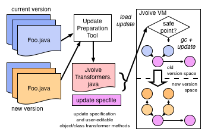

Jvolve is a Java VM with Dynamic Software Updating (DSU) support. DSU is a general-purpose mechanism that updates from an old version to a newer version of a program while it is running. DSU does not impose any special software or hardware architecture. For more details refer to our PLDI 2009 paper, "Dynamic Software Updates: A VM-centric Approach" PDF bibtex.

Source code is maintained using Mercurial, a distributed version control system. Before you get started, ensure that you have mercurial installed.
This page contains information on how to download and use Jvolve. There are three components (and their corresponding repositories) that you need to download. They are
Download the above repositories using Mercurial.
hg clone -r f8fcedddb95e http://bitbucket.org/suriya/jvolve
hg clone http://bitbucket.org/suriya/upt
hg clone http://bitbucket.org/suriya/jastaddj JastAddJ
Jvolve has been tested to work on ia32-osx and ia32-linux platforms. Before we build Jvolve, let us build UPT and JastAddJ, both of which are straightforward to build. They require nothing more than JDK and Apache ant.
# Build UPT
cd upt
ant
cd ..
# Build JastAddJ
cd JastAddJ/Java1.5Backend
ANT_OPTS="-Xmx256M" ant jar
cd ..
Now, let us get to building and testing Jvolve. Jvolve's requirements are the same as those of JikesRVM. If every thing in your system is right, you should be able to build Jvolve and run about 25 DSU-specific regression tests with a single command. The entire command should take about 5 minutes to run.
cd jvolve
# Command for building and testing
./bin/buildit localhost --test-run jvolve
# Command for building alone (for use later)
./bin/buildit localhost
# Command for running DSU-specific regression tests
./bin/buildit localhost BaseAdaptiveSemiSpaceDSU
Now is a good time to explain what BaseAdaptiveSemiSpaceDSU means. JikesRVM comes with various build flavors that represent different choices of JIT compilers and Garbage collectors. Jvolve requires JikesRVM's adaptive compilation system and is built on top of a semi-space copying collector. For more information look in jvolve/build/configs/.
If you have trouble building Jvolve, check if you are able to build a stock version of Jikes RVM.
cd jvolve
# Switch the JikesRVM trunk
hg up -r trunk
./bin/buildit localhost BaseAdaptiveSemiSpace
# Switch back to Jvolve
hg up -r suriya-dsu
Before we update an actual application, let us get to know how to trigger the VM to perform a dynamic update. There are a few command line options when invoking the VM that control DSU behavior. They are
The source code contains the most precise information about these flags. You can look up options introduced in Jvolve by comparing it to existing options in JikesRVM by
hg diff -r trunk rvm/src-generated/options
There are two ways to trigger DSU:
As mentioned above, Jvolve provides a command line option to specify an update specification file. UPT creates a specification file and code for class and object transformers from the jar files for the old and new versions. UPT can be invoked as follows.
upt/bin/upt.sh -a old-jar-file -b new-jar-file \
-c path-where-new-jar-file-will-be-placed-for-the-vm \
-p a-prefix-to-generate-old-version-stubs
For example,
upt/bin/upt.sh -a r0/application.jar -b r1/application.jar \
-c /complete/path/to/r1/application.jar \
-p r0_
If you have any issues with getting Jvolve to work, or any other comments or suggestions, please feel free to contact Suriya Subramanian at firstname@cs.utexas.edu.